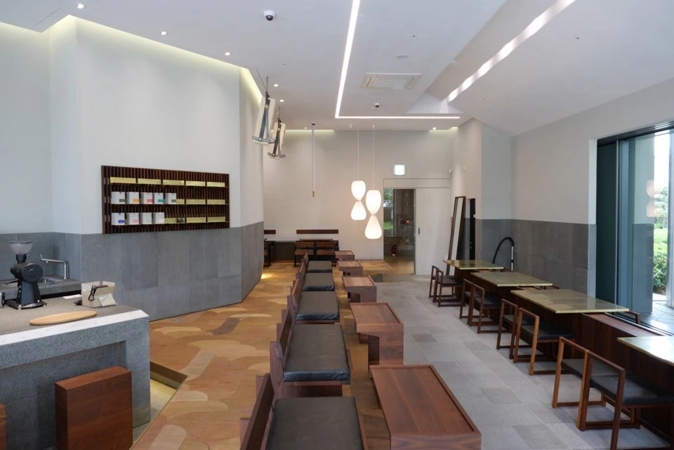

BUILT PROJECT / 2019
시공 · BUILT사이언스파크 카페SCIENCE PARK CAFE
회색 마감과 짙은 목재, 창가의 식재가 어우러진 카페.

03PROJECT OVERVIEW
차 한 잔의 시간을 채우는 재료와 빛.
높은 천장 아래 길게 이어진 좌석과 회색 카운터가 공간의 중심을 잡는 카페 현장입니다. 짙은 목재 가구와 바닥의 패턴, 창가의 작은 정원이 서로 다른 질감을 만들며 실내에 들어오는 빛을 담아냅니다.
PROJECT GALLERY
공간의 장면들